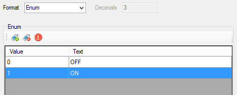

The 'Format' tab contains serie value format properties

The serie's format describes how physical values of the serie are formated.
For example, if a the value of a serie is 21.47895526 in the data file, using the format property this value can be shown in the graphic as 21.5 or 21.48.
Five formats are available:
To configure an enumeration for a serie, first select 'Enum' in the 'Format' list. Once 'Enum' selected, the enumeration configuration grid becomes active.

The 'Enum' panel is composed by a tool bar, containing enumeration control commands, and a grid containing every possible values of the serie and their corresponding text.
 Add enum: Add a value into the enumeration. Set a value into the 'Value' cell and the corresponding text into the 'Text' cell.
Add enum: Add a value into the enumeration. Set a value into the 'Value' cell and the corresponding text into the 'Text' cell.
 Delete enum: Delete a value from the enumeration.
Delete enum: Delete a value from the enumeration.
 Clear enums: Remove all values of the enumeration.
Clear enums: Remove all values of the enumeration.
Example of graphic using enum format.

Created with the Personal Edition of HelpNDoc: Easily create Web Help sites